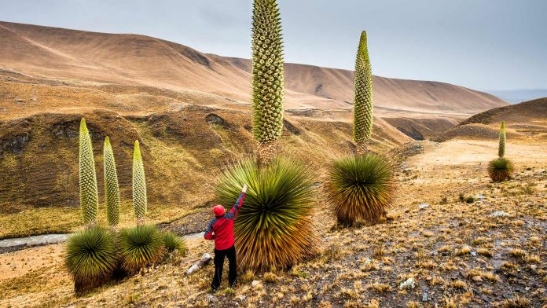
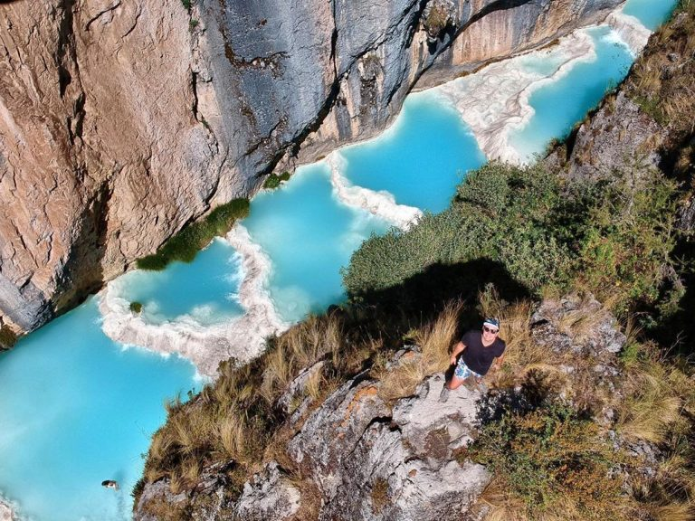
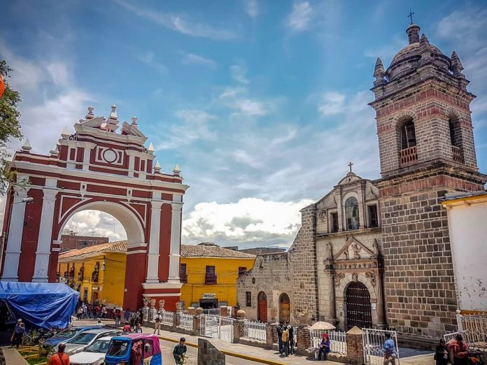
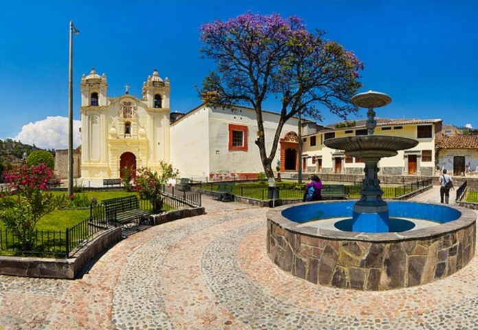
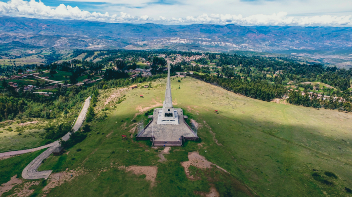
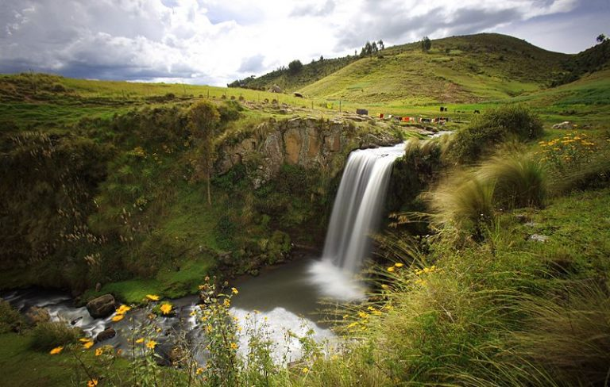
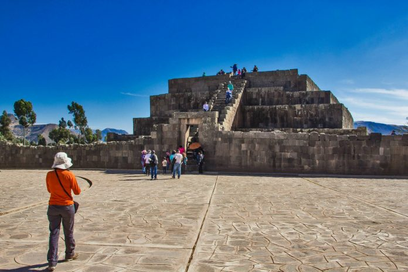
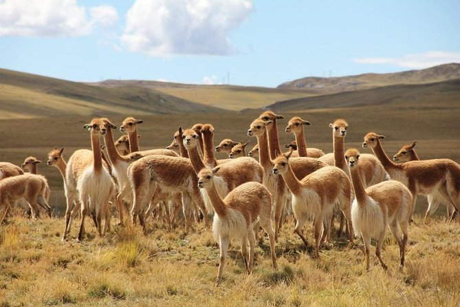

Destinos turísticos del departamento de Ayacucho
1.Titancayoq
Se trata de el bosque de puyas de Raymondi más grande de todo el Perú. Se encuentra a 4200 msnm y posee 2 mil 270 hectáreas. Desde 2010 está protegido por el estado, por lo que visitarlas garantiza una experiencia auténtica de la naturaleza de este particular ecosistema. Las puyas florecen cada 80 años, y una sola vez en su vida, en un espectáculo de la naturaleza sinnigual.

2.Aguas Turquesas de Millpu
Cuando una foto vale más que mil palabras. El color intenso de las Aguas Turquesas de Millpu sorprende a cada persona que las visite. Durante los últimos años este se ha convertido en el destino preferido de los viajeros que llegan a esta región del Perú.

3.Jirón 28 de Julio
Una de las calles más famosas de Ayacucho, 28 de Julio conduce al mercado central de la ciudad además del hermoso arco conmemorativo del combate del 2 de mayo 1886, cuando se logró vencer a las fuerzas españolas.

4. Templo San Cristóbal y Monasterio Santa Teresa
Construido en 1540, el templo San Cristóbal es el más pequeño y antiguo de las iglesias de Ayacucho. Justo al frente se encuentra un monasterio de clausura, de madres carmelitas. Conocer estas iglesia y todo el resto de las 37 que se encuentran en Ayacucho es sin duda una de las actividades imperdibles en la ciudad.

5. Pampa de Ayacucho
Estar en espacios abiertos otorgan una sensación de libertad difícil de encontrar en cualquier otro lugar. En la Pampa de Ayacucho se encuentra un santuario que conmemora la batalla del 9 de diciembre de 1824, batalla en la que se definió la independencia del Perú frente a España. Sin duda que aquí se respiran aires de libertad.

6. Cascadas de Cangallo
Ir a conocer cascadas siempre es un buen panorama. Y es que el poder del agua cayendo, el sonido y la humedad de su agua en la cara es una experiencia muy potente. Ayacucho esconde algunas sombrosas y poderosas cascadas. Es el caso de la cascada Pumapaqcha, que se puede observar en la fotografía.

7. Vilcashuamán
La huella histórica del imperio Inca la encontrarás en el complejo arqueológico de Vilcashuamán. En esta ciudad encontrarás vestigios en piedra pulida, clásica de la arquitectura Inca. En Vilcashuamán se encuentra porsupuesto el Templo del Sol y Templo de la Luna, además del famoso Ushnu que se observa en la fotografía.

8. Pampa Galeras
La Reserva de Pampa Galeras es el centro de conservación de vicuñas más grande del Perú. Se encuentra entre los 3800 y 5000 msnm y es uno de los lugares turísticos de Ayacucho más lejanos a la ciudad. Sin embargo, viajar a conocer sus amplios y hermosos paisajes vale completamente la pena.
